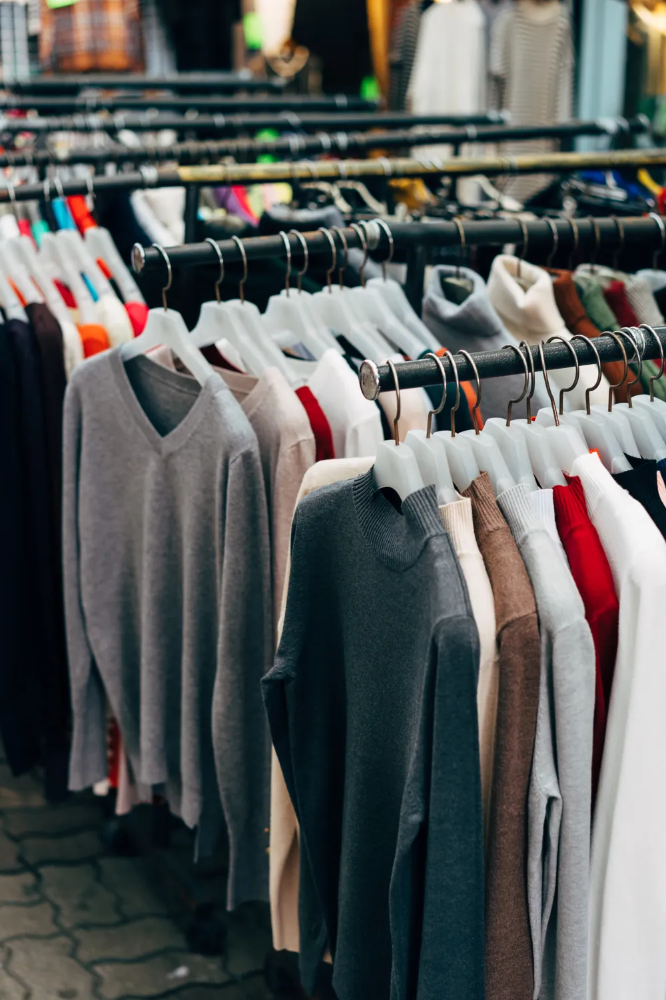
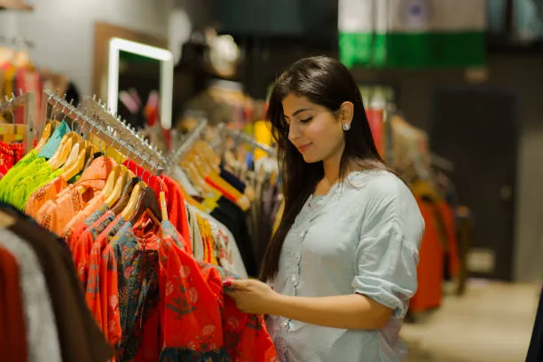
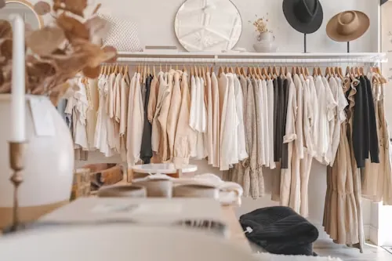

On the ramp
On the ramp Heritage embroidery
Heritage embroidery Men's linen
Men's linen
Winter knitsTarangan Textiles brings together fabrics, ready-to-wear and made-to-order fashion for women, men and children. We love traditional embroidery and rich silks as much as clean, minimal linen — and we make both with equal care.
Whether you're a shopper looking for the perfect festive outfit, a boutique stocking your racks or a brand needing a trusted manufacturing partner, we keep things simple: good fabric, honest pricing and a quick reply on WhatsApp.


Detail in every seam, motif and finish.
Fabrics and workmanship we'd wear ourselves.
Transparent rates for retail and bulk buyers.
Real people on WhatsApp, ready to help.
On the rampHeritage embroideryMen's linen
Winter knitsRetail, wholesale or custom — start a chat today.